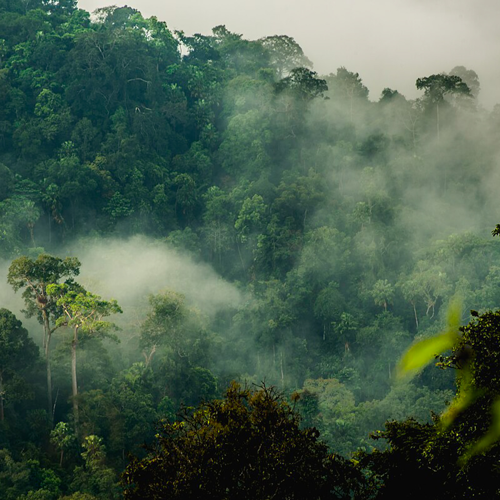
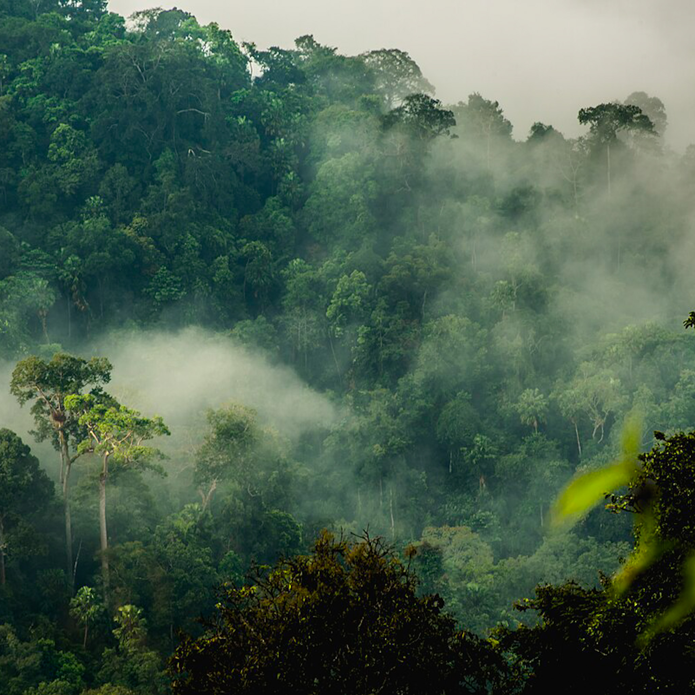

หาดชะอำ อยู่ใน อำเภอชะอำ จังหวัดเพชรบุรี เป็นบริเวณของชายหาดที่ทั้งสวยและมีชื่อเสียงของเพชรบุรี ไม่ว่าใครจะต้องรู้จักอย่างแน่นอนค่ะ ถือว่า หาดชะอำ นี้ เป็นแหล่งท่องเที่ยวที่สำคัญเลยก็ว่าได้ เพราะมีทั้งร้านอาหารทะเล ที่พักริมหาด ให้บริการเยอะแยะเลยค่ะ รวมถึงกิจกรรมริมทะเลที่สามารถไปทำชิลๆ ได้ อย่างเช่น การปั่นจักรยานเรียบถนนริมหาด เล่นบานาน่าโบ๊ท สกู๊ทเตอร์ และ ขี่ม้าชมวิวรอบๆ หาด ซึ่งในหลวงรัชกาลที่ 6 นั้น ทรงโปรดปรานเมืองเพชรบุรีเป็นอย่างมากค่ะ จนได้ให้มีการสร้างค่ายหลวงบางทะลุ ที่ หาดเจ้าสำราญ ขึ้นมาค่ะ แต่ที่ตำบลบางทะลุนั้น แมลงวันจะชุกชุมมาก เลยได้มีการก่อสร้างเพิ่ม ย้ายมาทางทิศใต้ของชายฝั่งเพชรบุรี ซึ่งก็คือบริเวณ หาดชะอำ แห่งนี้นั่นเองค่ะ คือการก่อสร้างพระราชวังฤดูร้อน ที่สร้างจากไม้สัก ซึ่งพระตำหนักแห่งนี้ก็คือ พระราชนิเวศน์มฤคทายวัน ค่ะ โดยพื้นที่ของพระราชวังนั้น จะยื่นออกไปยังทะเลอีกด้วย สวยงดงามอย่างมาก ในปัจจุบันนี้เลยทำให้ หาดชะอำ เป็นอีกแหล่งพักผ่อนหย่อนใจยอดฮิตของนักท่องเที่ยวค่ะ โดยในทุกวันพุธที่หาดชะอำ ก็จะมีการรณรงค์ให้หุบร่มชายหาดต่างๆ เพื่อให้นักท่องเที่ยวได้สัมผัสถึงความสวยงามของทะเลอย่างแท้จริงอีกด้วยค่ะ เป็นอย่างไรกันบ้างคะ กับหาดชื่อดังของเพชรบุรีแห่งนี้ ไม่แปลกใจเลยว่าทำไมที่นี่ยังคงเป็นที่เที่ยวทะเลตลอดกาลอยู่
 

อุทยานแห่งชาติแก่งกระจาน ตั้งอยู่ในอำเภอแก่งกระจาน จังหวัดเพชรบุรี และบางส่วนของจังหวัดประจวบคีรีขันธ์ เป็นอุทยานแห่งชาติที่มีพื้นที่กว้างใหญ่ที่สุดในประเทศไทย ครอบคลุมพื้นที่กว่า 2.9 ล้านไร่ มีภูมิประเทศเป็นเทือกเขาสูงสลับซับซ้อน ปกคลุมไปด้วยป่าดิบชื้น ป่าดิบแล้ง และป่าเบญจพรรณ อุดมสมบูรณ์ไปด้วยทรัพยากรธรรมชาติและเป็นต้นน้ำของแม่น้ำเพชรบุรี ภายในอุทยานมีแหล่งท่องเที่ยวที่น่าสนใจหลายแห่ง เช่น เขื่อนแก่งกระจานซึ่งเป็นอ่างเก็บน้ำขนาดใหญ่มีทิวทัศน์สวยงาม จุดชมวิวพะเนินทุ่งที่มีชื่อเสียงเรื่องทะเลหมอกในยามเช้า น้ำตกทอทิพย์ที่มีน้ำไหลตลอดปี และบ้านกร่างแคมป์ที่เป็นแหล่งดูนกและผีเสื้อยอดนิยม อุทยานแห่งนี้เป็นแหล่งอนุรักษ์พันธุ์พืชและสัตว์ป่าหายากมากมาย เช่น ช้างป่า เสือ กระทิง และนกหลากหลายชนิด ด้วยความอุดมสมบูรณ์และความสำคัญทางธรรมชาติ ทำให้อุทยานแห่งชาติแก่งกระจานได้รับการขึ้นทะเบียนเป็นมรดกโลกทางธรรมชาติจากองค์การยูเนสโกในปี พ.ศ. 2564 ถือเป็นแหล่งท่องเที่ยวที่เหมาะสำหรับผู้ที่ต้องการสัมผัสบรรยากาศของธรรมชาติ ป่าเขา และสายน้ำอย่างแท้จริง
ถ้ำเขาหลวง หรือ “ถ้ำวิมานจักรี” เป็นสถานที่ท่องเที่ยวสำคัญของจังหวัดเพชรบุรี ตั้งอยู่ที่ตำบลธงชัย อำเภอเมืองเพชรบุรี ห่างจากเขาวังเพียงประมาณ 5 กิโลเมตร ก่อนขึ้นไปยังถ้ำต้องจอดรถไว้ด้านล่างและต่อด้วยรถสี่ล้อเล็กของชาวบ้าน ภูเขาลูกนี้มีความสูงราว 92 เมตร ภายในถ้ำมีหินงอกหินย้อยงดงาม เมื่อแสงอาทิตย์ส่องผ่านช่องเพดานถ้ำจะเกิดแสงสีสวยงามสะท้อนองค์พระพุทธรูปที่ประดิษฐานอยู่ภายในอย่างน่าประทับใจ ถ้ำเขาหลวงมีประวัติยาวนานตั้งแต่สมัยรัชกาลที่ 4 พระบาทสมเด็จพระจอมเกล้าเจ้าอยู่หัวทรงโปรดให้สร้างบันไดคอนกรีตขึ้นสู่ถ้ำและบูรณะพระพุทธรูปโบราณ ต่อมาในสมัยรัชกาลที่ 5 โปรดให้สร้างพระพุทธรูปเพิ่มเติมเพื่อถวายเป็นพระราชกุศลแด่พระชนก โดยบางองค์มีตราประจำรัชกาลที่ 1–5 ประทับไว้ ปัจจุบันถ้ำเขาหลวงได้รับการบูรณะให้สะดวกต่อการเข้าชม และยังคงเป็นสถานที่ท่องเที่ยวทางธรรมชาติและศาสนาที่งดงามและทรงคุณค่าของจังหวัดเพชรบุรี
หาดเจ้าสำราญ เป็นสถานที่ท่องเที่ยวชื่อดังของจังหวัดเพชรบุรี ตั้งอยู่ในอำเภอเมืองเพชรบุรี ห่างจากตัวเมืองเพียงประมาณ 15 กิโลเมตร เป็นชายหาดที่มีบรรยากาศสงบ เงียบ ไม่พลุกพล่าน เหมาะแก่การพักผ่อนชมวิวทะเล สูดอากาศบริสุทธิ์ และนั่งฟังเสียงคลื่นเบา ๆ ริมชายฝั่ง เดิมทีหาดแห่งนี้เป็นสถานที่พักผ่อนของเจ้านายและขุนนางในสมัยรัชกาลที่ 5 จึงได้ชื่อว่า “หาดเจ้าสำราญ” ชายหาดทอดยาวไปตามแนวชายทะเลอ่าวไทย มีแนวสนร่มรื่น เหมาะสำหรับการนั่งเล่นหรือปิกนิก ในช่วงเย็นนักท่องเที่ยวมักมาชมพระอาทิตย์ตกน้ำที่สวยงาม นอกจากนี้ยังมีกิจกรรมต่าง ๆ ให้เลือก เช่น เล่นน้ำทะเล ขี่ม้าริมหาด นั่งรถสามล้อชมวิว หรือพักค้างแรมในรีสอร์ตและบ้านพักริมทะเลที่มีให้บริการมากมาย ปัจจุบันหาดเจ้าสำราญได้รับการดูแลให้สะอาดและปลอดภัย เหมาะสำหรับการท่องเที่ยวแบบครอบครัว เป็นอีกหนึ่งจุดหมายยอดนิยมของเพชรบุรีที่สามารถเที่ยวได้ตลอดทั้งปี